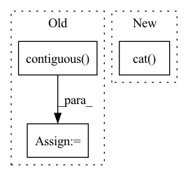

Pattern ID :170
Before Change
// Back to batch first
attn_scores = torch.stack(attn_scores).transpose(0, 1)
mel_outputs = torch.stack(mel_outputs).transpose(0, 1).contiguous()
stop_tokens = torch.stack(stop_tokens).transpose(0, 1).squeeze(2)
// (B, T", mel_dim*r) -> (B, T, mel_dim)
mel_outputs = mel_outputs.reshape(B, -1, self.mel_dim)After Change
break
// To tensor
mel_outputs = torch.cat( mel_outputs, dim=1) // (B, T_decoder, mel_dim)
attn_scores = torch.cat(attn_scores, dim=1) // (B, T_decoder/r, T_encoder)
stop_tokens = torch.cat(stop_tokens, dim=1) // (B, T_decoder)
In pattern: SUPERPATTERN
Frequency: 5
Non-data size: 3
Instances Fragment ID: 720730
Project Name: thuhcsi/tacotron
Commit Name: fea9ec535ec373aad564646f4f292fbee0217c29
Time: 2021-03-18
Author: johnson.tsing@gmail.com
File Name: model/tacotron.py
M Class Name: Decoder
N Class Name: Decoder
M Method Name: forward(4)
N Method Name: forward(4)
M Parent Class: nn.Module
N Parent Class: nn.Module
M File Name: model/tacotron.py
N File Name: model/tacotron.py
M Start Line: 87
M End Line: 187
N Start Line: 88
N End Line: 180
Before Change
// out = self.conv2(out, batch)
// out = self.conv3(out, batch) // n_points x length_features
// reshape back into batch
out = out.contiguous() .view(batch_size, n_vertices, -1)
// aggregate features from vertices
out = out.max(dim=-2, keepdim=False)[0]After Change
if self.config["skip_connections"]:
aggr_features.append(self.global_pool(out, batch, batch_size))
feature = torch.cat( aggr_features, -1) if self.config["skip_connections"] else self.global_pool(out, batch, batch_size)
// post-processing
out = self.lin(feature) Fragment ID: 720745
Project Name: maria-korosteleva/garment-pattern-estimation
Commit Name: fd8ff19db9d988e5ac9788f8b67560dab3cc7c33
Time: 2020-09-23
Author: mariako@kaist.ac.kr
File Name: nn/net_blocks.py
M Class Name: EdgeConvFeatures
N Class Name: EdgeConvFeatures
M Method Name: forward(2)
N Method Name: forward(2)
M Parent Class: nn.Module
N Parent Class: nn.Module
M File Name: nn/net_blocks.py
N File Name: nn/net_blocks.py
M Start Line: 106
M End Line: 125
N Start Line: 137
N End Line: 161
Before Change
embed_out = self.embedding(x)
lstm_out, self.hidden = self.lstm(embed_out, self.hidden)
lstm_out = self.dropout(lstm_out)
lstm_out = lstm_out.contiguous() .view(-1, self.hidden_dim)
fc_out = self.fc(lstm_out)
return fc_outAfter Change
)
_, (hidden, cell) = self.lstm(packed_embed_out)
hidden = self.dropout(torch.cat( (hidden[-2, :, :], hidden[-1, :, :]), dim=1) )
fc_out = self.fc(hidden)
return fc_out Fragment ID: 720734
Project Name: sforaidl/kd_lib
Commit Name: d00c232de5a16bcd2a81b896a35ec3f20c2f9fa8
Time: 2020-08-23
Author: 31511755+avishreekh@users.noreply.github.com
File Name: KD_Lib/models/lstm.py
M Class Name: LSTMNet
N Class Name: LSTMNet
M Method Name: forward(3)
N Method Name: forward(2)
M Parent Class: nn.Module
N Parent Class: nn.Module
M File Name: KD_Lib/models/lstm.py
N File Name: KD_Lib/models/lstm.py
M Start Line: 58
M End Line: 63
N Start Line: 47
N End Line: 55
Before Change
// Back to batch first
attn_scores = torch.stack(attn_scores).transpose(0, 1)
mel_outputs = torch.stack(mel_outputs).transpose(0, 1).contiguous()
stop_tokens = torch.stack(stop_tokens).transpose(0, 1).squeeze(2)
// (B, T", mel_dim*r) -> (B, T, mel_dim)
mel_outputs = mel_outputs.reshape(B, -1, self.mel_dim)
return mel_outputs, stop_tokens, attn_scores
After Change
// To tensor
mel_outputs = torch.cat(mel_outputs, dim=1) // (B, T_decoder, mel_dim)
attn_scores = torch.cat( attn_scores, dim=1) // (B, T_decoder/r, T_encoder)
stop_tokens = torch.cat(stop_tokens, dim=1) // (B, T_decoder)
// Validation check Fragment ID: 720735
Project Name: thuhcsi/tacotron
Commit Name: fea9ec535ec373aad564646f4f292fbee0217c29
Time: 2021-03-18
Author: johnson.tsing@gmail.com
File Name: model/tacotron2.py
M Class Name: Decoder
N Class Name: Decoder
M Method Name: forward(4)
N Method Name: forward(4)
M Parent Class: nn.Module
N Parent Class: nn.Module
M File Name: model/tacotron2.py
N File Name: model/tacotron2.py
M Start Line: 127
M End Line: 224
N Start Line: 127
N End Line: 216
Before Change
x = self.dense_block(input)
x = self.bottleneck_conv2d(x)
x = x.squeeze(dim=1)
x = x.permute(0, 2, 1).contiguous()
x, _ = self.rnn(x)
x = self.linear(x)
x = x.view(batch_size, W, out_channels, H)
output = x.permute(0, 2, 3, 1).contiguous()After Change
x_rnn = x_rnn.view(batch_size, W, 1, H)
x_rnn = x_rnn.permute(0, 2, 3, 1).contiguous()
output = torch.cat( [x, x_rnn], dim=1)
return output
class RNNBeforeDenseBlock(nn.Module): Fragment ID: 720742
Project Name: tky823/dnn-based_source_separation
Commit Name: a03228ac5d881722942f5d3b8f51c12b05045f49
Time: 2021-10-18
Author: delta9guitar97@gmail.com
File Name: src/models/dense_rnn.py
M Class Name: RNNAfterDenseBlock
N Class Name: RNNAfterDenseBlock
M Method Name: forward(2)
N Method Name: forward(2)
M Parent Class: nn.Module
N Parent Class: nn.Module
M File Name: src/models/dense_rnn.py
N File Name: src/models/dense_rnn.py
M Start Line: 53
M End Line: 62
N Start Line: 57
N End Line: 66